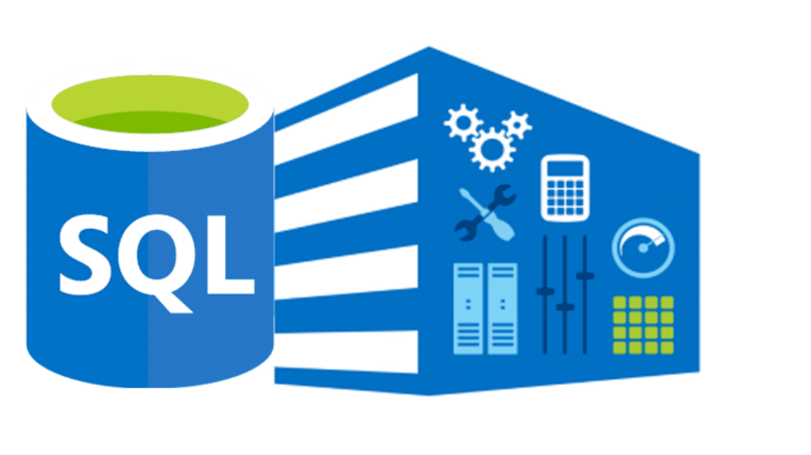

Exploratory analyses and data wrangling conducted on a PPP Loan dataset containing information on over 10 million approved borrowers. Using SQL Integration Services (SSIS), I imported the data, performed CTEs, joins, and window functions to gain insight, and then visualized the results using Tableau.
Conducted exploratory analysis on the LEGO Rebrickable dataset utilizing Python and the pandas, matplotlib, and seaborn libraries. The dataset covers over 70 years of LEGO parts and sets data. Demonstrated how to use Pandas functions such as MERGE, GROUPBY, and others to address complex data analysis questions. Other skills covered were joining dataframes, creating derived columns, and exploring data with Pandas.
A cohort analysis of an online retail dataset was conducted using SQL to understand customers' trends and patterns over time. Cohort Analysis is a form of behavioral analytics that takes data from a given subset, and breaks it down into related groups. The project aims to demonstrate the implementation of the following skills: • Understanding what is a cohort and cohort analysis • Handling missing values • Extracting months from dates • Assigning cohorts to each transaction • Assigning cohort indexes to each transaction • Creating cohort tables for retention rates • Interpreting retention rates • Visualizing with Tableau

To generate insights into the past purchasing behavior of customers, RFM analysis was performed on a retail dataset. RFM analysis is a way to use data based on existing customer behavior to predict how a new customer is likely to act in the future. Utilizing SQL subqueries, CTEs, aggregates, and window functions I was able to create a customer segmentation analysis. Customer frequency, monetary value, as well as recency affect customer lifetime value, a measure of engagement.

Interactive dashboards that visualize key insights retrieved from dataset analysis.
Conducted exploratory analysis and data wrangling on a PPP Loan dataset containing information on over 10 million approved borrowers using Python. Imported data from Excel and .CSV files, performed data cleaning and preparation for analysis. Utilized the pandas, NumPy, matplotlib, and seaborn libraries for data analysis and visualized results using Tableau.
The LEGO Rebrickable dataset was also analyzed through the use of SQL queries, including the application of advanced techniques such as Common Table Expressions (CTEs), joins, and window functions. The aim was to gain insights into the parts, themes, and sets produced by LEGO since its inception. This project also involved the creation of a database using SQL and the import of files into the database through SSIS, thereby enhancing database and data import skills.